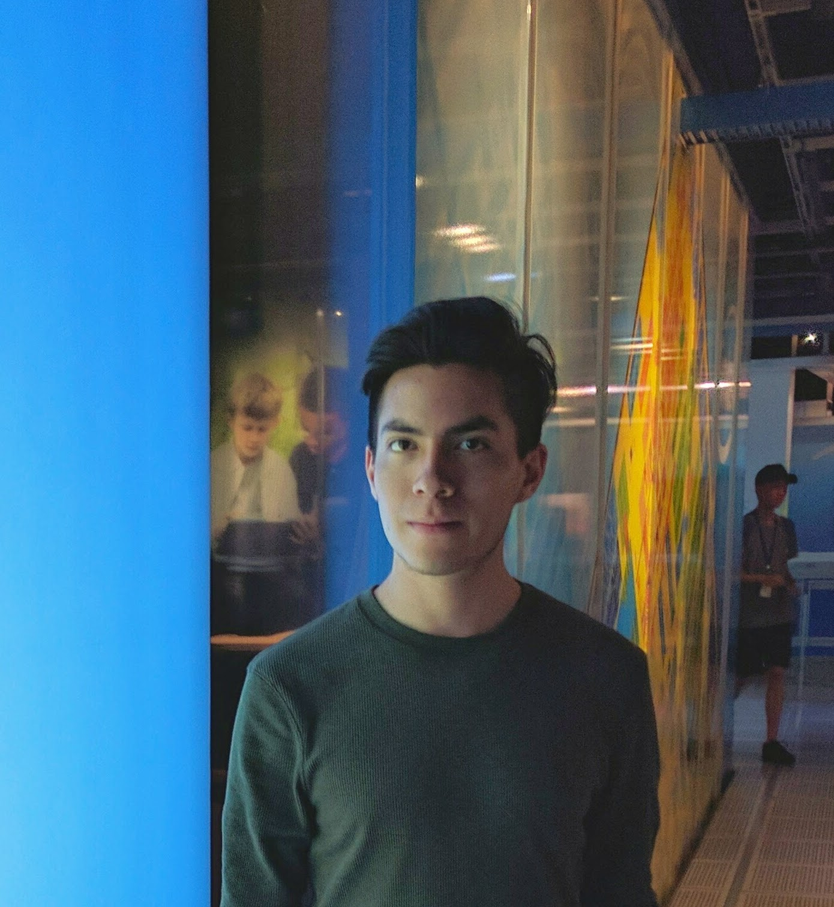

| Materia | Profesor | Grupo | Lunes | Martes | Miercoles | Jueves | Viernes |
| Arquitectura de computadoras | Victor Hugo | 3CM4 | 12-1:30 | 12-1:30 | 8:30-10 | 12-1:30 | |
| Ingenieria de Software | Jose Jaime | 3CM2 | 10:30-12 | 12-1:30 | |||
| Analsis de algoritmos | Consuelo Varinia | 3CM2 | 8:30-10 | 8:30-10 | |||
| Administracion de proyectos | Veronica | 3CM4 | 10:30-12 | 8:30-10 | 10:30-12 | ||
| Redes de computadoras | Axel Ernesto | 2CM9 | 12-1:30 | 1:30-3 | 10:30-12 | ||
| Tecnologias para la web | Rosa Monica | 2CM8 | 7-8:30 | 7-8:30 | 8:30-10 |
MATERIAS REPROBADAS: 0
MATERIAS NO CURSADAS: 0
MATERIAS DESFASADAS: 0
MATERIAS CURSADAS: 6
PROMEDIO ACTUAL: 9.0
Pasatiempos: dibujar, fotografia, viajar.
Peliculas preferidas: pepculas del studio ghibp.
Musica preferida: electronica, piano rock, new wave.
Libros preferidos: fullmetal alchemist
Deportes: natacion, tenis, ping-pong.
Otros gustos: los animales, la programación.